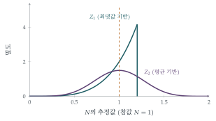

STEP III 1998, 문제 14
계속 읽기 전에 문제를 먼저 읽어 보자. 문제는 STEP Support Programme의 문제 데이터베이스에 있다: step.maths.org/questions/98-s3-q14
도입
제2차 세계 대전 중에 연합군 정보부는 독일이 전차를 몇 대나 생산하고 있는지 알고 싶어 했다. 첩보원들의 보고에 따르면 한 달에 약 \(1400\)대였다. 통계학자들은 다른 방법을 택했다. 노획한 전차의 변속기와 여러 부품에는 일련번호가 새겨져 있었는데, 이 일련번호는 사실상 \(1, 2, \ldots, N\)에서 뽑은 무작위 표본이다. 통계학자들은 이 번호만으로 생산량을 한 달에 약 \(250\)대로 추정하였다. 흔히 인용되는 수치에 따르면, 전쟁이 끝난 뒤 조사한 독일 측 기록에는 \(245\)대로 나와 있었다. 통계학자들이 첩보원들보다 훨씬 정확했던 것이다.
이 문제는 일련번호로부터 \(N\)을 추정하는 두 가지 방법을 비교한다. 두 방법 모두 평균적으로는 옳다. 그러나 한쪽이 다른 쪽보다 자료를 훨씬 효율적으로 사용하며, 어느 쪽이 그런지 알아내다 보면 추정 이론(estimation theory)의 핵심 아이디어에 이르게 된다. 평균적으로 옳은 추정량(estimator)들 가운데에서는 가장 적게 변동하는 것을 택하라는 것이다.
시작하기 전에
\(M\)이 \([0, N]\) 위의 서로 독립인 균등분포(uniform distribution) 값 \(n\)개 중 가장 큰 값이라면, \(\mathrm{P}(M \leq m)\)은 무엇인가?
\(M \leq m\)일 필요충분조건은 모든 \(X_i \leq m\)인 것이므로, \(0 \leq m \leq N\)에 대하여 \(\mathrm{P}(M \leq m) = \bigl(\frac mN\bigr)^n\)이다(12.25 절와 비교해 보라). 이를 미분하면 \(M\)의 확률밀도함수(probability density function)는 \(\frac{nm^{n-1}}{N^n}\)이다.
차근차근 풀기
단계 1 두 추정량 모두 불편추정량이다
\(M\)에 대하여 \[\mathrm{E}(M) = \int_0^N m\cdot\frac{nm^{n-1}}{N^n}\,\mathrm{d}m = \frac{n}{n + 1}N, \qquad\text{따라서}\qquad \mathrm{E}(Z_1) = \frac{n + 1}{n}\cdot\frac{n}{n + 1}N = N.\] 평균에 대하여: 각 \(X_i\)의 평균은 \(\frac N2\)이므로 \(\mathrm{E}(Z_2) = \frac2n\cdot n\cdot\frac N2 = N\)이다.■
두 추정량 모두 불편추정량(unbiased estimator)이다. 즉, 평균적으로는 올바른 답을 준다. 인수 \(\frac{n + 1}{n}\)은 관측된 가장 큰 일련번호가 언제나 \(N\)보다 조금 작다는 사실을 보정해 준다.
단계 2 두 추정량의 분산
\(\mathrm{E}(M^2)\)을 구하고, 이를 이용하여 \(\mathrm{Var}(M)\)을 구하라. \(Z_2\)의 경우, \([0, N]\) 위의 균등분포를 따르는 확률변수 하나의 분산은 무엇인가?
\(\mathrm{E}(M^2) = \int_0^N m^2\cdot\frac{nm^{n-1}}{N^n}\,\mathrm{d}m = \frac{n}{n + 2}N^2\)이므로 \[\begin{aligned} \mathrm{Var}(M) &= \frac{n}{n + 2}N^2 - \frac{n^2}{(n + 1)^2}N^2 = \frac{nN^2}{(n + 1)^2(n + 2)}, \\ \mathrm{Var}(Z_1) &= \frac{(n + 1)^2}{n^2}\mathrm{Var}(M) = \frac{N^2}{n(n + 2)}. \end{aligned}\] \([0, N]\) 위의 균등분포를 따르는 확률변수의 분산(variance)은 \(\frac{N^2}{12}\)이고 \(X_i\)들은 서로 독립이므로 \[\mathrm{Var}(Z_2) = \frac{4}{n^2}\cdot n\cdot\frac{N^2}{12} = \frac{N^2}{3n}. \qed\]
단계 3 어느 쪽이 더 나은가?
\(\frac{1}{n(n + 2)}\)과 \(\frac{1}{3n}\)을 비교하라. \(n\)이 커질 때 각각 어떻게 변하는가?
두 분산의 비는 \(\frac{\mathrm{Var}(Z_1)}{\mathrm{Var}(Z_2)} = \frac{3}{n + 2}\)이며, 이는 \(n \geq 2\)일 때 \(1\)보다 작다(\(n = 1\)일 때는 두 추정량이 일치하므로 비가 \(1\)이다). 따라서 \(Z_1\)이 더 낫고, \(n\)이 클 때는 훨씬 더 낫다. \(Z_1\)의 표준편차(standard deviation)는 \(\frac1n\)처럼 줄어들지만, \(Z_2\)의 표준편차는 \(\frac{1}{\sqrt n}\)처럼 줄어들 뿐이다(그림 13.3.1). 일련번호가 \(n = 10\)개이면 \(Z_1\)의 표준편차는 \(N\)의 약 \(9\%\)이고, \(Z_2\)는 약 \(18\%\)이다.
\(Z_1\)을 택할 이유가 하나 더 있다. \(Z_2\)는 터무니없는 값을 줄 수 있다. 일련번호가 \(10\), \(20\), \(300\)이면 \(Z_2 = \frac23 \cdot 330 = 220\)인데, 이는 실제로 관측한 일련번호보다도 작다. 반면 \(Z_1 = \frac43 \cdot 300 = 400\)은 결코 가장 큰 관측값보다 작아질 수 없다.■

돌아보기
불편성. 각 추정량은 기댓값이 정확히 \(N\)이 되도록 크기를 조정한 것이다.
분산을 비교하라. 불편추정량들 가운데에서는 분산이 더 작은 것이 더 믿을 만하다.
가장 많은 정보를 담은 통계량을 사용하라. 최댓값은 표본이 지닌 \(N\)에 관한 정보를 모두 담고 있지만, 평균은 그 정보의 상당 부분을 버린다.
숨은 수학
충분성
최댓값이 왜 이렇게 훨씬 나은가? 가장 큰 값 \(M\)이 주어지면, 나머지 값들은 \(N\)이 무엇이든 그저 \([0, M]\) 위의 균등분포를 따를 뿐이다. 즉, 나머지 값들은 \(N\)에 관해 더 이상 아무런 정보도 주지 않는다. 최댓값은 충분통계량(sufficient statistic)이다. C. R. Rao와 David Blackwell의 정리(1945–47)에 따르면, 어떤 불편추정량이든 충분통계량이 주어졌을 때의 조건부 기댓값으로 바꾸면 개선되거나, 적어도 나빠지지는 않는다. 여기서는 그렇게 하면 \(Z_2\)가 \(Z_1\)이 된다. 나아가 레만–셰페 정리(Lehmann–Scheffé theorem)를 쓰면 \(Z_1\)이 가능한 가장 작은 분산을 갖는 불편추정량임을 보일 수 있다. 또한 \(Z_1\)의 분산은 \(\frac{1}{n^2}\)처럼 줄어드는데, 이는 대부분의 추정량이 보이는 \(\frac1n\)보다 빠르다는 점에도 주목하라. 이런 일이 생기는 까닭은 \(N\)이 분포의 끝점이고, 자료가 그 끝점 쪽으로 몰려 쌓이기 때문이다.
이산적인 경우
실제 일련번호는 자연수 \(1, 2, \ldots, N\)이며, 비복원추출(sampling without replacement)로 뽑힌다. 이때 가장 좋은 불편추정값은 \(\hat N = m + \frac mk - 1\)인데, 여기서 \(m\)은 관측한 일련번호 \(k\)개 중 가장 큰 값이다. 즉, 최댓값에 관측값 사이의 평균 간격을 더한 것이다. 주로 변속기와 바퀴의 일련번호에 바탕을 둔 이런 종류의 추정값을 써서, 연합군 통계학자들은 독일의 생산량을 한 달에 약 \(246\)대로 추정하였다. 나중에 독일 측 기록에서 확인된 수치는 \(245\)대였고, 첩보 보고가 제시한 수치는 \(1400\)대였다.
이 방법은 그 뒤로도 여러 번 쓰였다. 예를 들어 분석가들은 처음 판매된 몇 개의 일련번호로부터 새로운 소비자 제품이 몇 개나 만들어졌는지를 추정하였다. 제조사들도 교훈을 얻어, 지금은 많은 제조사가 일련번호를 단순한 순서로 읽히지 않도록 암호화한다. Richard Ruggles와 Henry Brodie는 1947년 Journal of the American Statistical Association에 전시의 이 연구를 소개하였다.
사고 기술
추정량은 확률변수이다. 평균적으로 옳은지(편향)와 얼마나 변동하는지(분산)를 묻고, 오차가 더 작은 쪽을 택하라.
대학에서는 이것이 효율적 추정(efficient estimation) 이론으로 이어진다. 크라메르–라오 하한(Cramér–Rao bound)은 불편추정량의 분산이 얼마나 작아질 수 있는지를 알려 주고, 충분성은 그 하한에 어떻게 도달하는지를 설명해 준다.
더 도전하기
평균제곱오차. 편향추정량 \(M\)에 대하여 \(\mathrm{E}(M - N)^2 = \mathrm{Var}(M) + \bigl(\mathrm{E}(M) - N\bigr)^2\)이다. 이 평균제곱오차(mean squared error)를 계산하고 \(\mathrm{Var}(Z_1)\)과 비교하라. \(\mathrm{E}(cM - N)^2\)을 최소로 하는 상수 \(c\)를 구하라.
최솟값도. \((n + 1)\min\{X_i\}\)도 \(N\)의 불편추정량임을 보이고, 그 분산을 구하라. 이 추정량은 쓸 만한가?
이산 공식. 일련번호 \(1, \ldots, N\)에서 \(k\)개를 비복원추출하고, 그 최댓값을 \(m\)이라 하자. \(\mathrm{P}(\max \leq m) = \binom mk\big/\binom Nk\)임을 보이고, \(k = 1\)일 때 \(m + \frac mk - 1\)이 불편추정량임을 확인하라.
전차. 노획한 전차 \(5\)대의 일련번호가 \(19\), \(40\), \(42\), \(60\), \(98\)이라면, 만들어진 전차의 수를 추정하라.
더 읽을거리
Richard Ruggles & Henry Brodie, “An empirical approach to economic intelligence in World War II”, Journal of the American Statistical Association 42 (1947). 원래의 기록이다.
John Rice, Mathematical Statistics and Data Analysis (Duxbury). 편향, 분산, 충분성을 다룬다.
David Spiegelhalter, The Art of Statistics (Pelican).